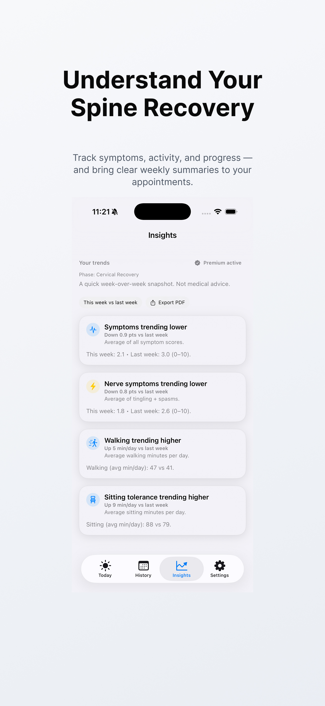
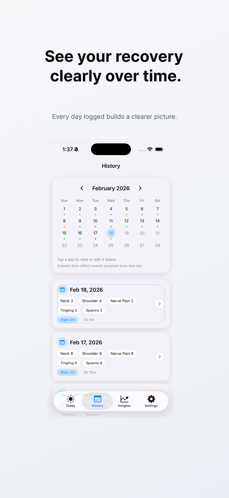
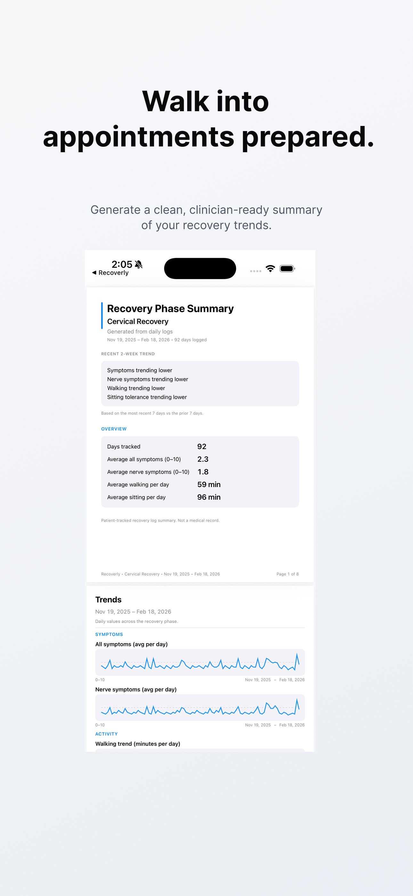
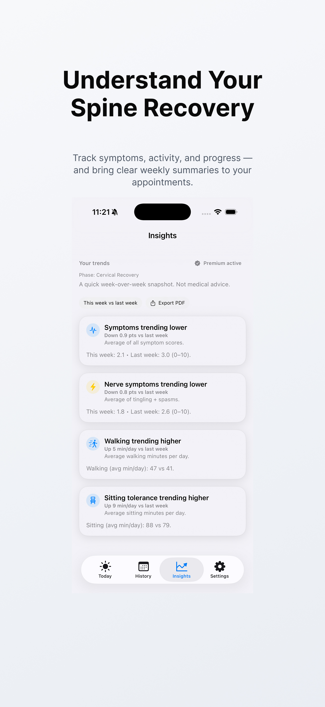
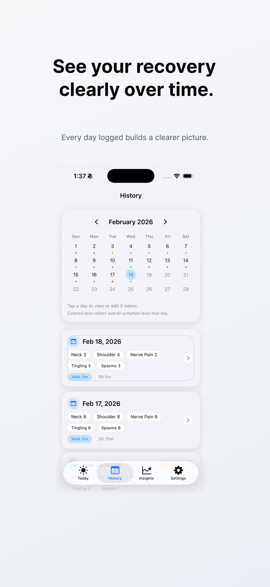
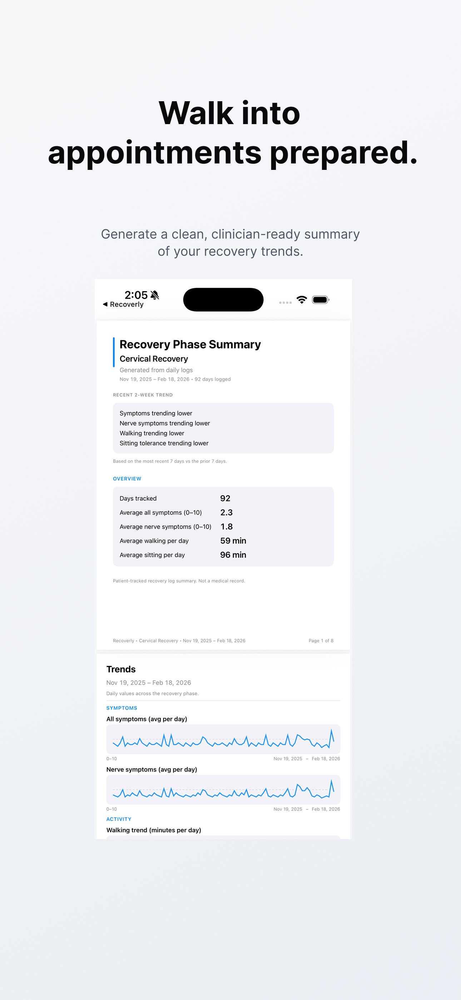

Structured weekly trends for spine recovery.
Track symptoms, nerve activity, and movement — and see clear 7-day vs 7-day comparisons instead of guessing how your week has been.
Download on the App StoreSee progress clearly — not just daily logs.
Recoverly turns daily entries into structured weekly insights you can actually use.
Log once per day
Track pain, nerve symptoms, walking, sitting tolerance, and notes in under a minute.
Compare recent vs prior week
Weekly comparisons show whether symptoms are improving, worsening, or holding steady.
Manage recovery phases
Support for lumbar, cervical, and other spine recovery phases over time.
Generate PDF summaries
Create appointment-ready reports with structured charts and trend interpretations.
Preview Recoverly
 





Built from real spine recovery.
Recoverly was created by a spine surgery patient who needed a clearer way to track progress between follow-up appointments.
It’s grounded in lived experience — but built with structure and discipline so anyone recovering from lumbar, cervical, or other spine procedures can use it confidently.
Your data stays on your device.
No account. No cloud storage. Recoverly stores your data locally unless you choose to export a PDF.